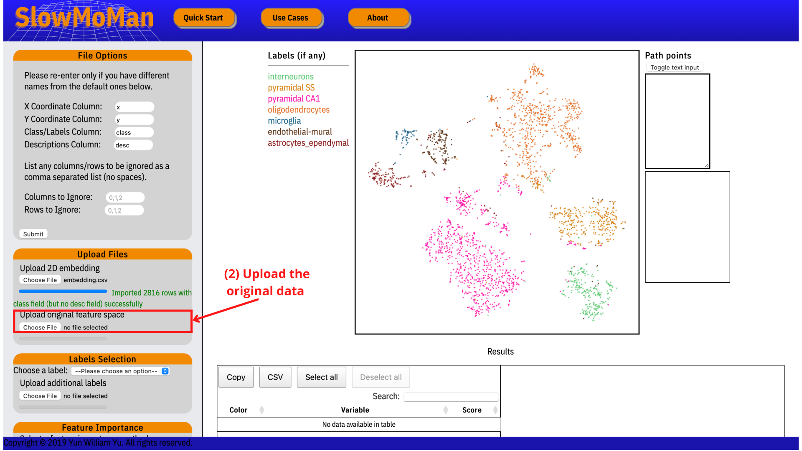
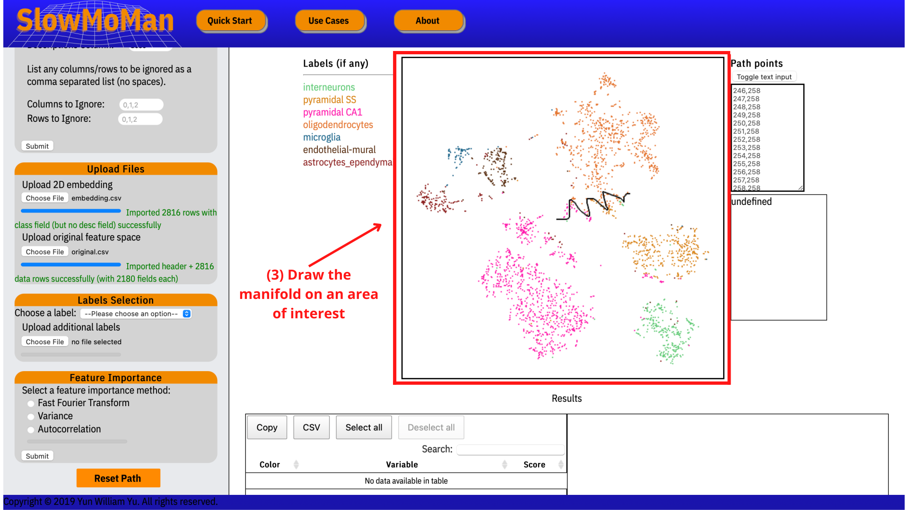
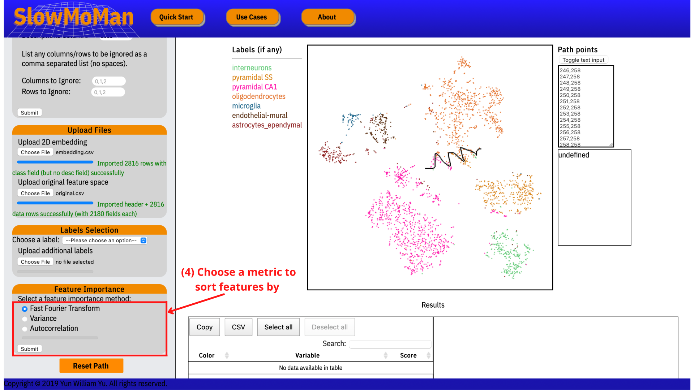
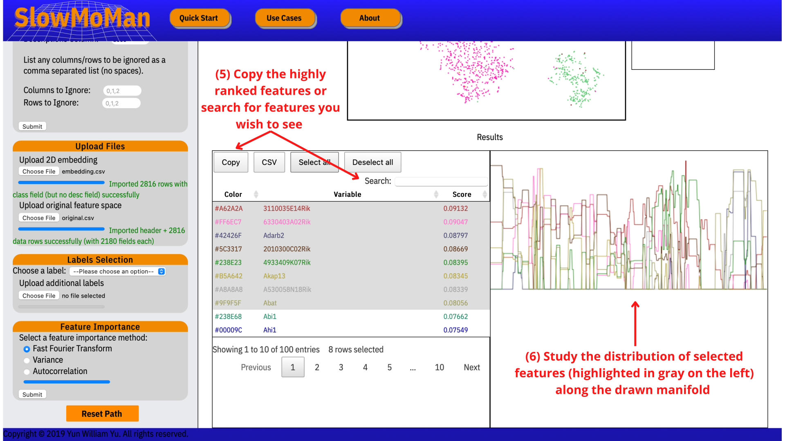

SlowMoMan ("Slow Motions on Manifolds") is a tool for exploratory data analysis. The fastest way to understanding is to do, so we present a simple example for users to run through.
Before using SlowMoMan, we need 2 items:
1. A dataset with many dimension (columns/features)
2. A 2-dimensional embedding of the above dataset
Users must independently obtain the 2D embedding (with Python, R, etc.) and may
use any embedding algorithm they wish (PCA, UMAP, t-SNE).
---- Provided Datasets ----
1. Swiss Roll Dataset: A toy dataset often used when testing data visualization tools.
Swiss Roll Original
Swiss Roll 2D T-SNE
2. Fashion MNIST Dataset: A collection of images of clothing articles.
Fashion MNIST Original
Fashion MNIST 2D T-SNE
3. Human Microbiome Project Dataset: A dataset from the Human Microbiome Project.
Human Microbiome Original (1000 features)
Note that the file above is capped at 1000 features for easier downloading, the full original file can be
downloaded here (189 MB): Human Microbiome Original (FULL)
Human Microbiome 2D T-SNE
4. Bacterial 16S rRNA Sequences Dataset: A dataset of 108,413 isolated named strains of bacteria in the Greengenes database.
Bacterial 16S rRNA Sequences Original
Note the file above is 163 MB. Only for variants whose consensus makes up less than 90% of the dataset (0=empty, 1=A, 2=C, 3=G, 4=T)
Bacterial 16S rRNA Sequences 2D T-SNE
---- Full Tutorial of a Use Case: ----
To follow along, download the QuickStart data from the SlowMoMan Google Drive folder: link to folder
In this example, we use data obtained by Zeisel et al. (2015).
The original dataset has 2180 features, each of them a gene. There are 2816 rows, each corresponding to a single cell from the mouse brain.
Each of the cells in this dataset belong to 1 of 7 subclasses of brain cell (interneurons,
pyramidal SS,
pyramidal CA1,
oligodendrocytes,
microglia,
endothelial-mural,
astrocytes_ependymal).
From this large dataset, we run t-SNE to obtain a 2D embedding of the original data. Finally, we have all we need to being using SlowMoMan.
Step 1: Upload the 2D embedding of the data.

Step 2: Upload the original data.

Step 3: Draw a custom manifold.

Step 4: Choose a metric for feature ranking.

Step 5/6: Save the highly ranked features.
